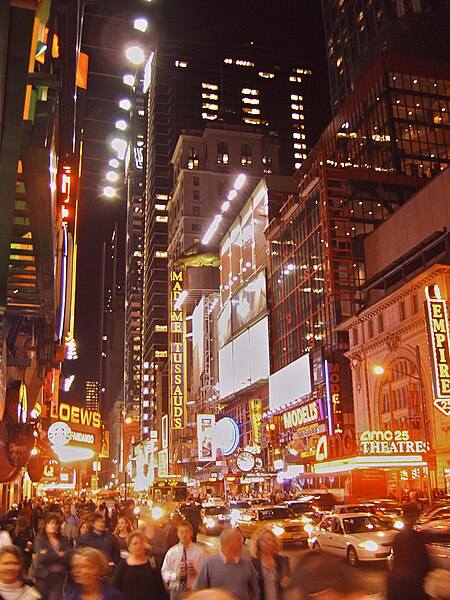

環境構築
[1]:
!pip install azure-cognitiveservices-vision-computervision
Requirement already satisfied: azure-cognitiveservices-vision-computervision in /anaconda/envs/azureml_py38/lib/python3.8/site-packages (0.9.0)
Requirement already satisfied: azure-common~=1.1 in /anaconda/envs/azureml_py38/lib/python3.8/site-packages (from azure-cognitiveservices-vision-computervision) (1.1.28)
Requirement already satisfied: msrest>=0.5.0 in /anaconda/envs/azureml_py38/lib/python3.8/site-packages (from azure-cognitiveservices-vision-computervision) (0.7.1)
Requirement already satisfied: requests~=2.16 in /anaconda/envs/azureml_py38/lib/python3.8/site-packages (from msrest>=0.5.0->azure-cognitiveservices-vision-computervision) (2.31.0)
Requirement already satisfied: isodate>=0.6.0 in /anaconda/envs/azureml_py38/lib/python3.8/site-packages (from msrest>=0.5.0->azure-cognitiveservices-vision-computervision) (0.6.1)
Requirement already satisfied: azure-core>=1.24.0 in /anaconda/envs/azureml_py38/lib/python3.8/site-packages (from msrest>=0.5.0->azure-cognitiveservices-vision-computervision) (1.26.4)
Requirement already satisfied: requests-oauthlib>=0.5.0 in /anaconda/envs/azureml_py38/lib/python3.8/site-packages (from msrest>=0.5.0->azure-cognitiveservices-vision-computervision) (1.3.1)
Requirement already satisfied: certifi>=2017.4.17 in /anaconda/envs/azureml_py38/lib/python3.8/site-packages (from msrest>=0.5.0->azure-cognitiveservices-vision-computervision) (2022.9.24)
Requirement already satisfied: charset-normalizer<4,>=2 in /anaconda/envs/azureml_py38/lib/python3.8/site-packages (from requests~=2.16->msrest>=0.5.0->azure-cognitiveservices-vision-computervision) (3.1.0)
Requirement already satisfied: urllib3<3,>=1.21.1 in /anaconda/envs/azureml_py38/lib/python3.8/site-packages (from requests~=2.16->msrest>=0.5.0->azure-cognitiveservices-vision-computervision) (1.26.16)
Requirement already satisfied: idna<4,>=2.5 in /anaconda/envs/azureml_py38/lib/python3.8/site-packages (from requests~=2.16->msrest>=0.5.0->azure-cognitiveservices-vision-computervision) (3.4)
Requirement already satisfied: six in /anaconda/envs/azureml_py38/lib/python3.8/site-packages (from isodate>=0.6.0->msrest>=0.5.0->azure-cognitiveservices-vision-computervision) (1.16.0)
Requirement already satisfied: typing-extensions>=4.3.0 in /anaconda/envs/azureml_py38/lib/python3.8/site-packages (from azure-core>=1.24.0->msrest>=0.5.0->azure-cognitiveservices-vision-computervision) (4.6.0)
Requirement already satisfied: oauthlib>=3.0.0 in /anaconda/envs/azureml_py38/lib/python3.8/site-packages (from requests-oauthlib>=0.5.0->msrest>=0.5.0->azure-cognitiveservices-vision-computervision) (3.2.2)
[2]:
#
from azure.cognitiveservices.vision.computervision import ComputerVisionClient
from azure.cognitiveservices.vision.computervision.models import VisualFeatureTypes
from msrest.authentication import CognitiveServicesCredentials
# モジュールの読み込み
from PIL import Image
import os
key = '107d563c469e4fef8dc186b223eb63ed'
credentials = CognitiveServicesCredentials(key)
client = ComputerVisionClient(
endpoint="https://koike02.cognitiveservices.azure.com/",
credentials=credentials
)
ComputerVisionClient クライアント オブジェクトを使用することによって、次のことができます。
画像の分析: 顔、色、タグなど、特定の機能の画像を分析できます。
画像の説明を取得する: そのサブジェクト ドメインに基づいて画像の説明を取得します。
[3]:
import requests
import io
from io import BytesIO
import urllib
from urllib.request import urlopen
画像分析
[4]:
import requests
import numpy as np
from PIL import Image
from io import BytesIO
# 画像のURL
image_url = "https://upload.wikimedia.org/wikipedia/commons/thumb/1/12/Broadway_and_Times_Square_by_night.jpg/450px-Broadway_and_Times_Square_by_night.jpg"
# 画像を取得
response = requests.get(image_url)
image_bytes = BytesIO(response.content)
# PILを使用して画像を開く
image_pil = Image.open(image_bytes)
display(image_pil)

上記の画像を使用し、分析を行います。まずは画像に写っている情報の検出を行いましょう。
[5]:
# image_analytics で上の画像分析する
image_analysis = client.analyze_image(url,visual_features=[VisualFeatureTypes.tags])
for tag in image_analysis.tags:
print(tag)
{'additional_properties': {}, 'name': 'building', 'confidence': 0.9910045862197876, 'hint': None}
{'additional_properties': {}, 'name': 'metropolis', 'confidence': 0.9403555393218994, 'hint': None}
{'additional_properties': {}, 'name': 'metropolitan area', 'confidence': 0.9358731508255005, 'hint': None}
{'additional_properties': {}, 'name': 'downtown', 'confidence': 0.9340376853942871, 'hint': None}
{'additional_properties': {}, 'name': 'outdoor', 'confidence': 0.9233906269073486, 'hint': None}
{'additional_properties': {}, 'name': 'skyscraper', 'confidence': 0.9208872318267822, 'hint': None}
{'additional_properties': {}, 'name': 'urban area', 'confidence': 0.9175583124160767, 'hint': None}
{'additional_properties': {}, 'name': 'street', 'confidence': 0.8893557786941528, 'hint': None}
{'additional_properties': {}, 'name': 'commercial building', 'confidence': 0.8842802047729492, 'hint': None}
{'additional_properties': {}, 'name': 'mixed-use', 'confidence': 0.8771032094955444, 'hint': None}
{'additional_properties': {}, 'name': 'crowded', 'confidence': 0.8658456802368164, 'hint': None}
{'additional_properties': {}, 'name': 'night', 'confidence': 0.8426163196563721, 'hint': None}
{'additional_properties': {}, 'name': 'city', 'confidence': 0.8208400011062622, 'hint': None}
{'additional_properties': {}, 'name': 'people', 'confidence': 0.6946084499359131, 'hint': None}
{'additional_properties': {}, 'name': 'light', 'confidence': 0.6930656433105469, 'hint': None}
建物、メトロポリス、ダウンタウン、外、街、人、ライトなど画像から様々な情報が取得できていることがわかります。ほんの数コードで高度な画像処理を行うことができました。
ランドマーク（建物の検出）
次にlist_models という種類のAIモデル表示します。
[10]:
models = client.list_models()
for x in models.models_property:
print(x)
{'additional_properties': {}, 'name': 'landmarks', 'categories': ['outdoor_', '户外_', '屋外_', 'aoarlivre_', 'alairelibre_', 'building_', '建筑_', '建物_', 'edifício_']}
[17]:
domain = "landmarks"
url = "https://images.pexels.com/photos/338515/pexels-photo-338515.jpeg"
# 画像を取得
response = requests.get(url)
image_bytes = BytesIO(response.content)
# PILを使用して画像を開く
image_pil = Image.open(image_bytes)
display(image_pil)

では、上記の画像を list_model に推論させてみましょう。
[18]:
#画像のLandmarks の取得
language = "ja"
analysis = client.analyze_image_by_domain(domain, url, language)
for landmark in analysis.result["landmarks"]:
print(landmark["name"])
print(landmark["confidence"])
エッフェル塔
0.971265435218811
画像にエッフェル塔が写っていることを検出してくれています。
また、コードにて言語（language)を日本語に設定しているため推論結果も日本語で検出されています。この用に英語だけではない多言語にも対応していることがわかりました。他にも有名人などをこのモデルでは検出することが可能です。
文章生成
最後に先程のエッフェル塔が検出された画像から画像の説明文の作成を行います。
describe_image のメソッドを使用すると簡単に画像から説明文を作成してくれます。実際に実装してみましょう。
[21]:
# 画像の説明文の作成
domain = "landmarks"
language = "ja"
max_descriptions = 3
analysis = client.describe_image(url, max_descriptions, language)
for caption in analysis.captions:
print(caption.text)
print(caption.confidence)
建物の前に立っているエッフェル塔
0.3260513366368707
時計台のあるエッフェル塔
0.3250513366368707
草の上に立っているエッフェル塔
0.3240513366368707
画像から説明文が生成されました。AI のConfidence（自信度）があまり高くないため少し違和感のある文章ではありますが、画像がどのような画像なのかは伝わるかと思います。実装は以上です。クラウドを使用して高度な画像処理を実装しました。最後に下記について考えてみましょう。
実装が終わったら下記について考えて見ましょう。 - Azure AI サービスでの画像処理とローカルでの画像処理モデルの違いはなんですか？ - Azure AI サービスのメリットはなんですか？ - Azure AI サービスのデメリット・考慮事項は何でしょうか？ - ローカルで画像処理モデルを構築し、活用する場合と Azure AI サービスはどの用に使い分けますか？